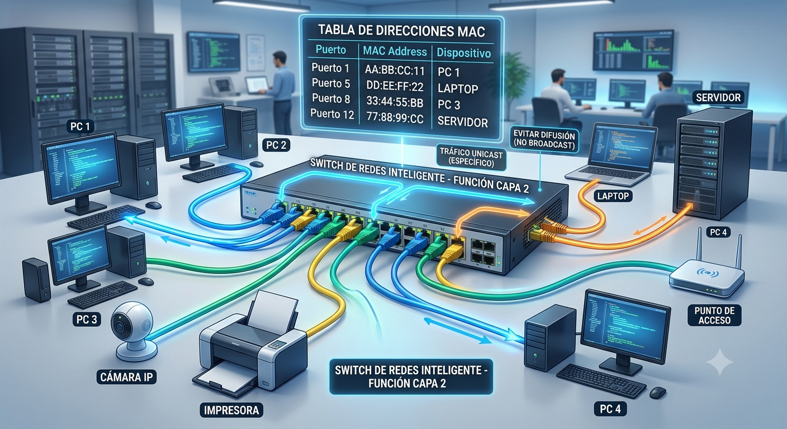

Concepto
¿Qué es un switch de red?
Un switch es un dispositivo de red que permite conectar varios equipos dentro de una misma red local, como computadoras, impresoras, servidores, cámaras o puntos de acceso.

La función principal de un switch: es recibir, analizar y reenviar las tramas de datos hacia el dispositivo de destino correspondiente. Cuando un equipo envía información a otro dispositivo conectado al mismo switch, este analiza la dirección MAC de destino y consulta su tabla de direcciones MAC para determinar el puerto por el cual debe enviar la información.
Por ejemplo, si una computadora necesita enviar un archivo a una impresora conectada al mismo switch, el switch identifica la dirección MAC de la impresora y reenvía la información por el puerto correspondiente, facilitando una comunicación más eficiente entre ambos dispositivos.
Entre sus principales funciones se encuentran:

- Interconectar dispositivos: permite conectar múltiples equipos dentro de una misma red local.
- Identificar dispositivos: utiliza las direcciones MAC para reconocer los equipos conectados.
- Aprender direcciones MAC: registra dinámicamente las direcciones MAC y los puertos asociados en su tabla.
- Reenviar tramas: dirige los datos hacia el puerto donde se encuentra el dispositivo de destino.
- Facilitar la comunicación: permite que diferentes dispositivos intercambien información dentro de la red.
- Organizar el tráfico de datos: evita, cuando conoce el destino, enviar las tramas innecesariamente a todos los puertos.